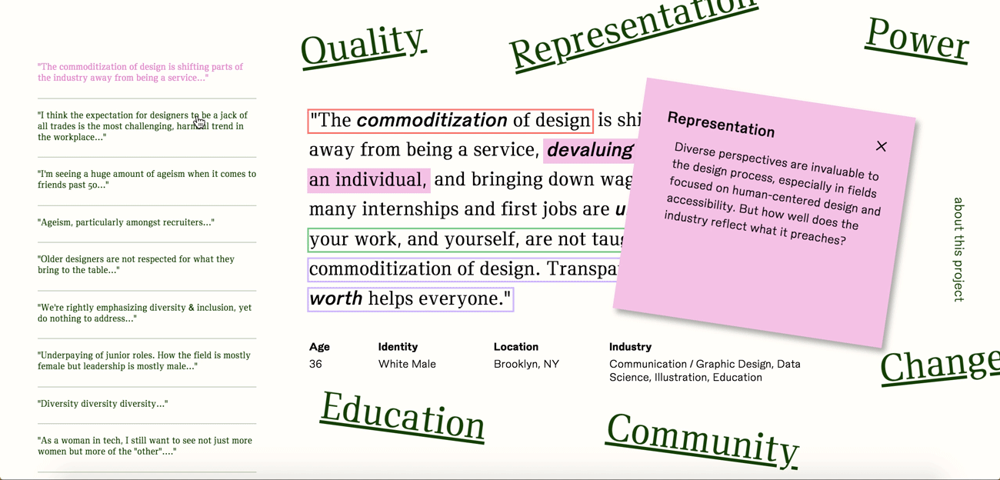
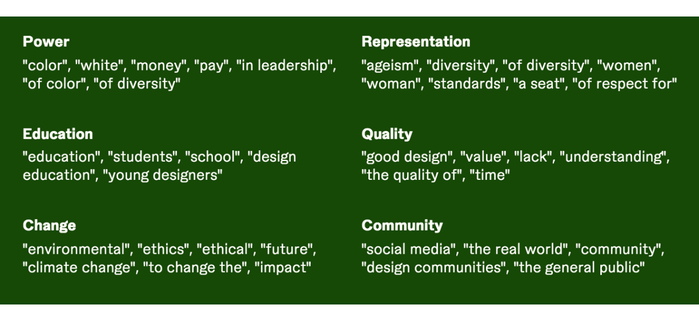

Exploratory Site
Visit the live website ↗
Browse Quotes

Users are able to preview quotes through the left sidebar to get an overview of key thoughts within the dataset at a glance.
Highlight Surf
Clicking on highlighted texts directs users down the list of quotes for the given category, all of which are connected thematically.
The highlights reveal the quote's categorization and placement within the curated selection. Inverted highlighted text highlights tangential categories the
quote also touches upon, and clicking on the highlight allows users to navigate to the corresponding category.
External Links
Embedded witin select quotes are external links to relevant articles from
AIGA Eye on Design ↗ to further discourse about a theme
pertinent to the current state of design.
Spot Words
Hovering over a bolded spot word provides context into key themes identified across all six of our libraries, providing
opportunities for comparison between issues that the design industry is not heavily considering and paying close attention to.
The Book
We printed and bound a 120 page book. With identical content as the site, rather than linking to external content, we kept all
‘portals’ within the book via sticky notes. Each sticky contains a reference to a related quote in a different category.
Parsing Data
Using Python and NLTK to parse through census data, we identified the 150 bi-grams and tri-grams that appear most
frequently in the dataset. We sorted the words and phrases into 6 core categories: quality, representation, power, change, community and education.
Sorting bi-grams and tri-grams into themed categories.

Dictionaries created to help parse through the data set.
Identifying quotes within the data set that mention key themes.
Libraries of sorted quotes based on dictionaries.
Sifting through the sorted data to create a connecting narrative with quotes.
User Flow and Prototypes
We went through numerous various site and book iterations, thinking about how quotes should be linked,
how content should be stylized, and how we could provide an introspective experience
for users to consider their own position in the matter.2
Visual Identity
Our visual system pays homage to our language based data visualization by placing strong emphasis on
typography and color. Our visual identity features modern elements inspired by the practice of reading and highlighting printed text.
Type treatment
Color and visual system
Final Thoughts
This project marked a lot of major milestones for me: my first data visualization project, my most
ambitious web project to date, my first time working with these two amazing collaborators. Through this process, we were able to challenge
ourselves to look into the affordances of different mediums, be ambitious with our craft, learn plenty about parsing data and create compelling
narratives to tell untold stories.
In the future, I would like to explore ways in which the user’s personal narratives can be weaved into our database, be it
through allowing users to bookmark selections, annotate, or replying to tangents, to transform our dataset into something continuous and in flux.